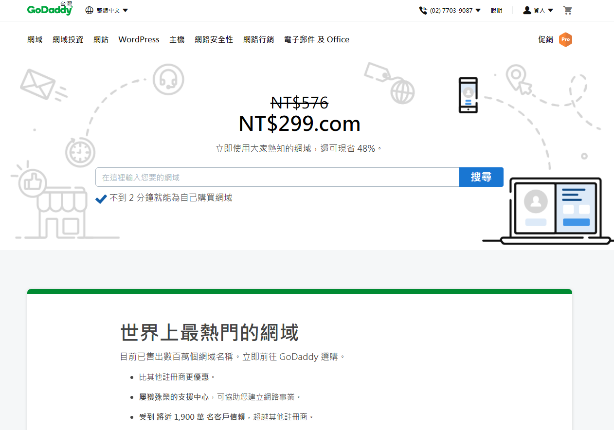
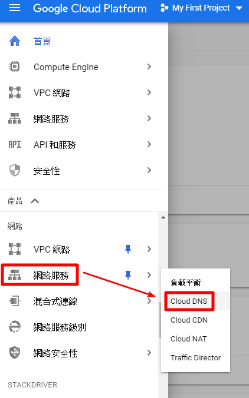
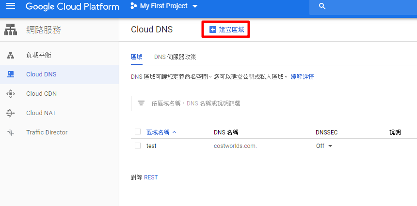
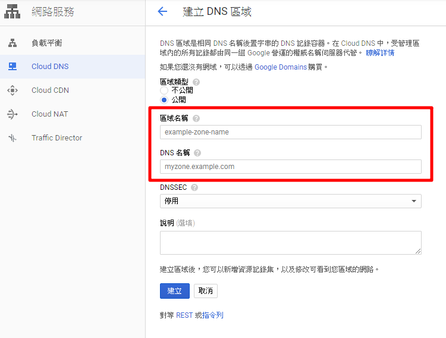
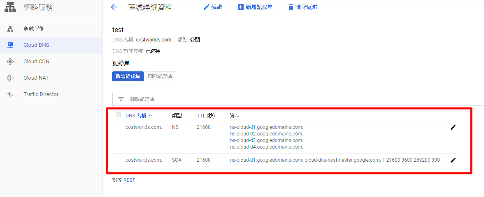
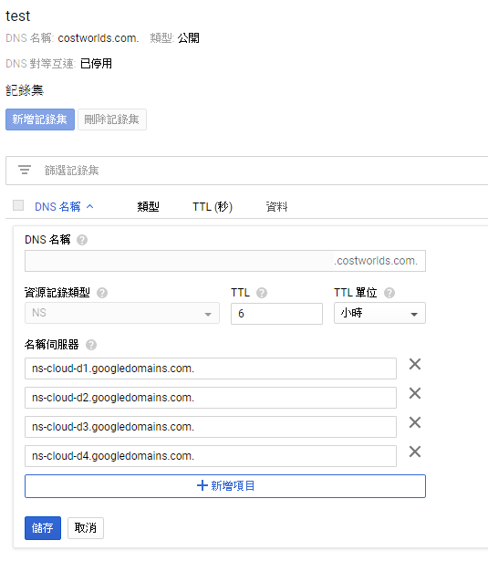
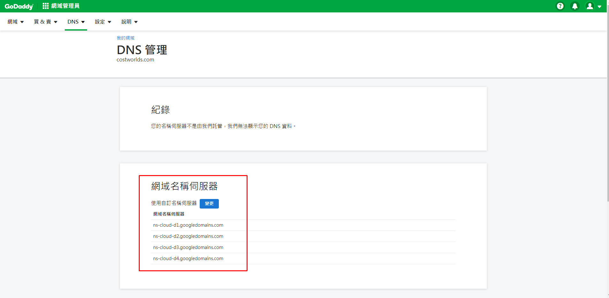
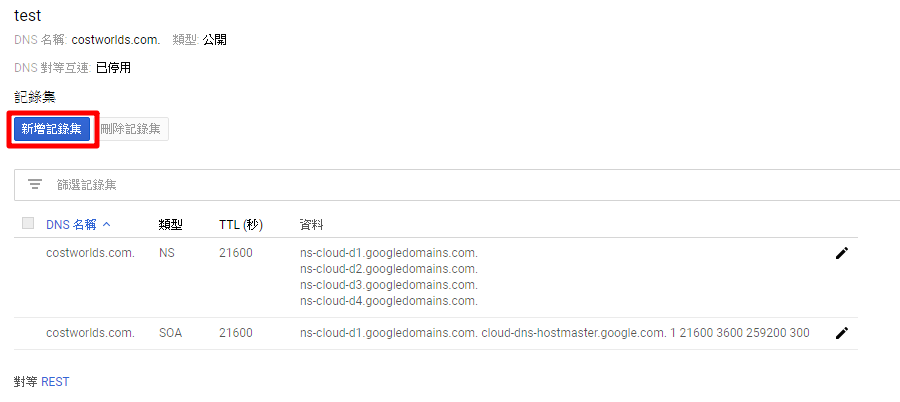
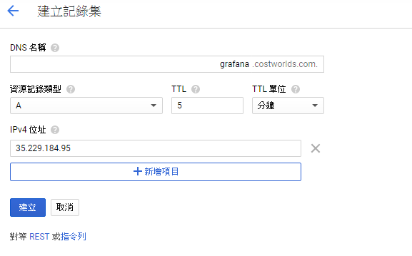
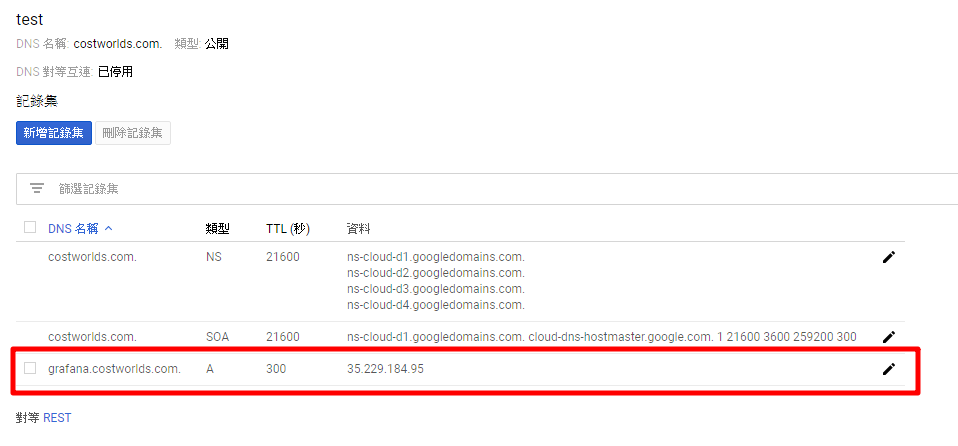

本篇文章降介紹如何在 GCP 設定 DNS 網域
租好網域後，接下來到 GCP 設定 DNS 網域 ( 本文章是租用 GoDaddy 網域 )

一、開啟 GCP 導覽選單選擇網路 → Cloud DNS

二、點選建立區域

三、輸入區域名稱 (名稱隨意)，DNS 要輸入你租的網域名稱，輸入完點選建立

四、建立好了之後會產生兩個記錄集，將記錄類行為 NS 的名稱伺服器複製到你租的網域空間那邊的 DNS 設定裡

點一下右邊鉛筆可以做編輯

ex：GoDaddy 的 DNS 設定

五、點選新增記錄集，建立新的記錄集

六、資源類型選 A、IPv4 位址輸入 VM 外網 IP，輸入完後點選建立

建立完成回到 Cloud DNS 會看到新的記錄集出現，半小時內就會綁定成功
